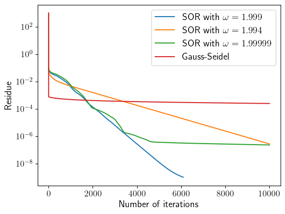
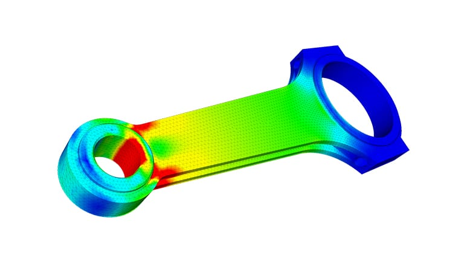

Boundary Value Problems
Successive Overrelaxation
Previously we have introduced the SOR method for solving a boundary value PDE problem: $$ u_{i,j}^{n+1} = u_{i,j}^n + \frac{\omega}{4} (u_{i+1,j}^n + u_{i-1,j}^{n+1} + u_{i,j+1}^n + u_{i,j-1}^{n+1} - \rho_{i,j}\Delta^2 - 4 u_{i,j}^n) $$ where $0 < \omega < 2$ is the overrelaxation parameter. The method reduces to Gauss-Seidel when $\omega = 1$.
Successive Overrelaxation
When implementing the method for demonstration and for Homework 8, I noticed that the expressions I quoted from Numerical Recipes were not right.
$\omega \approx 2/(1 + \pi/N)$ is not an optimal choice even for a simple Poisson-type problem.
Successive Overrelaxation
I wrote the code to solve the equation $\nabla^2V = -\rho$ with homogeneous Neumann boundary conditions:
Successive Overrelaxation
Here is the convergence for different $\omega$ for Poisson equation on a $1024\times 1024$ grid:
It turns out $\omega \approx 2 - 1/N$ is a pretty good choice.
Successive Overrelaxation
The implementation of SOR is actually not very different from Gauss-Seidel, apart from an extra factor $\omega$. The optimal choice of $\omega$ lies in an extremely narrow range.
It turns out the Chebyshev acceleration doesn't really matter when $N$ is large. It only affects the first $\sim 20$ iterations.
Doing an even/odd alternating update does not give any performance benefits, nor does it accelerate convergence.
Finite Element Method
Finite Element Method
Finite element method is designed to solve elliptic PDEs as boundary value problems, and it's very widely used in the industry. It's also frequently called "finite element analysis".
Finite Element Method
Let's illustrate the basic idea of FEM using the Poisson equation $\nabla^2u = -\rho$ again.
Define $\phi(x, y)$ as a test function that is only nonzero in a small region $R$ and vanishes on the boundary. The following integral is zero if $u$ satisfies the Poisson equation: $$ \int_R \left[\phi \nabla^2 u + \rho \phi\right]\,dxdy = 0 $$
Using divergence theorem, we can transform the equation into: $$ \int_R \left[\nabla\phi \cdot \nabla u - \rho\phi\right]\,dxdy = 0 $$
Finite Element Method
Suppose we construct a number of these locally non-zero functions $\phi_i(x, y)$ and expand the unknown function $u(x, y)$ in terms of these functions:
$$ u(x, y) = \sum_i u_i \phi_i(x, y) $$$u_i$ can be thought of as the value of $u$ at the center of the $i$-th element.
Finite Element Method
Plugging the expansion into the integral equation, we have:
$$ \sum_i u_i \int_R \nabla\phi_i \cdot \nabla \phi_j\,dxdy = \int_R\rho(x, y)\phi_j\,dxdy $$If the elements are small enough, the $\rho(x, y)$ can be considered constant within each element, and the integral on the right hand side can be evaluated directly. This gives a linear system of equations for the unknowns $u_i$: $$ \sum_i A_{ij} u_i = \rho_j $$
Finite Element Method
In practice, a 2D computational domain is often discretized into a triagular grid, and the basis functions $\phi_i(x, y)$ are triangular interpolation functions.

Finite Element Method
Typically, every triangle is associated 3 basis functions $\phi_{a, b, c}$, one for each vertex.
They are chosen such that, for example, $\phi_a = 1$ at vertex $a$, and $\phi_a = 0$ at vertices $b$ and $c$. Within the triangle, $\phi_a$ is a linear function of $x$ and $y$. Outside the triangle, $\phi_a = 0$. Similarly for $\phi_b$ and $\phi_c$.
An explicit expression for $\phi_a(x, y)$ can be found using the above constraints: $$ \phi_a(x, y) = \frac{1}{2S}\left[(x_by_c - x_cy_b) + (y_b - y_c)x + (x_b - x_c)y\right] $$ where $S$ is the area of the triangle.
Finite Element Method
The finite element equation is: $$ \sum_i u_i \int_R \nabla\phi_i \cdot \nabla \phi_j\,dxdy = \int_R\rho(x, y)\phi_j\,dxdy $$
Since the basis functions $\phi_i$ are linear, their derivatives $\nabla\phi_i$ are quite easy to write down analytically. The cross term $\int \nabla\phi_i\cdot\nabla\phi_j$ vanishes if triangles $i$ and $j$ do not share a vertex.
For values of $u_i$ on the boundary, the terms are moved to the right hand side and becomes part of the source term.
Finite Element Method
The matrix $\mathbf{A}$ in the finite element equation is sparse, since only neighboring triangles produce nonzero coefficients. It is also symmetric by construction.

Finite Element Method
The final step is to solve a sparse matrix equation $\mathbf{A}\mathbf{u} = \mathbf{b}$.
For small problems, sparse LU decomposition or Cholesky decomposition work well. Use a reputable library with sparse matrix capabilities.
For large problems, the conjugate gradient method is prefered.
Finite Element Method
FEM is also closely related to the spectral method. Both methods expands the unknown function as a linear superposition of basis functions:
$$ u(x, y) = \sum_i u_i \phi_i(x, y) $$The difference is that FEM uses piecewise linear basis functions that are nonzero only in a small region, while spectral method uses global basis functions that are defined everywhere. The global nature of spectral methods is one of the reasons it converges exponentially.
Finite Element Method
In practice, FEM is a very mature algorithm with many software packages and domain-specific variations. It is an extremely important method to know for a computational physicist.
List of FEM packages